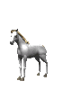
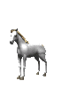

to
CSE 154


 



Hi! Thanks for clicking my website! My name is Elias and I am a 4th year Computer Science student here at UW and this is my second time TAing cse154 (the best cse class @ uw)
Submit Early! The closer to the due date, the slower auto-grader gets :(
If you write your code with linters in mind, it will save you a lot of time. Here are some tips:
A lot of the assignments in this class are opened ended and allow for some creative flair, so chase what interests you!